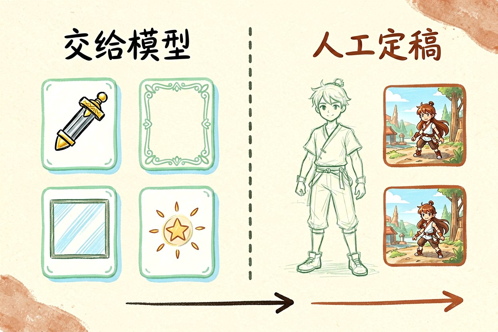
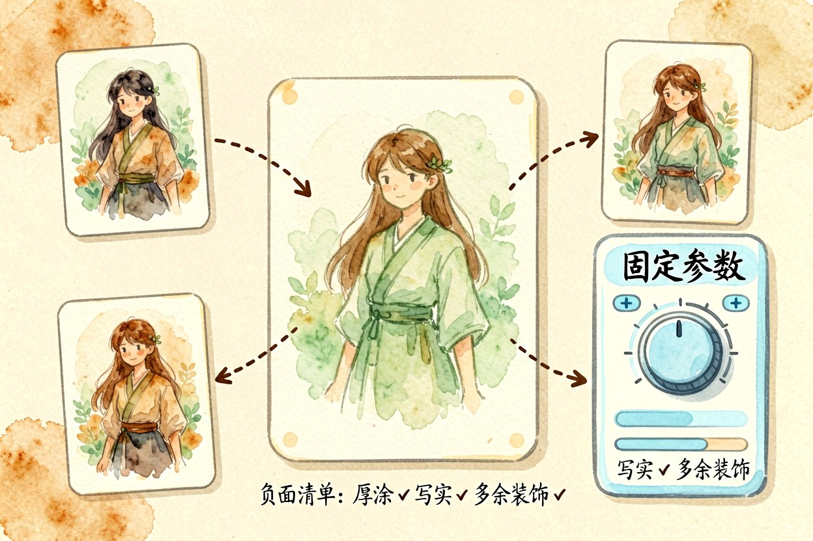
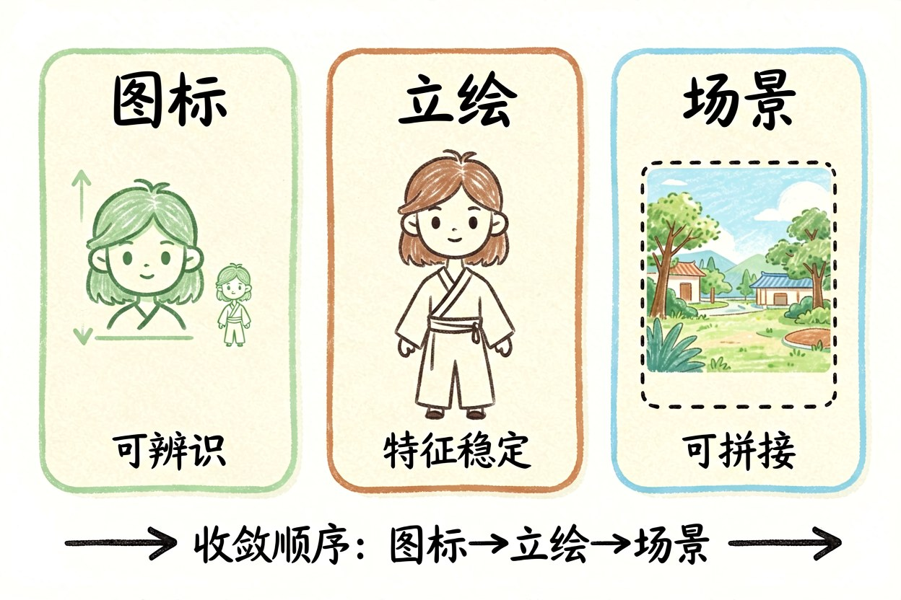
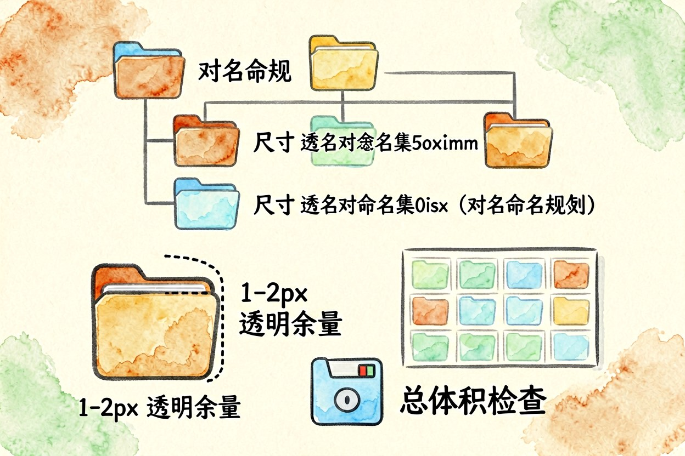
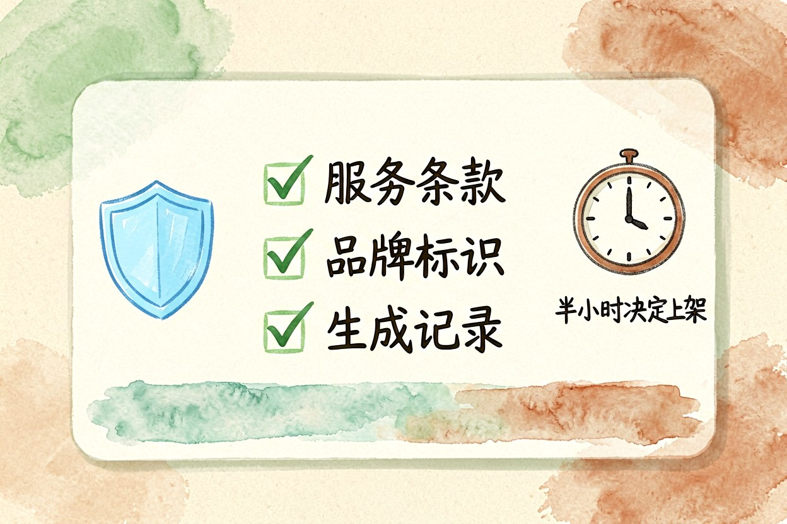
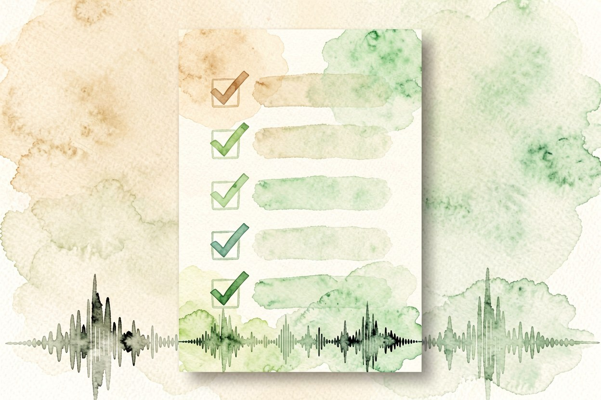

AI 游戏素材怎么做：从立绘到切图的完整流程
独立开发者缺的往往不是一张好看的图，而是两百张看起来出自同一个画师的图。
AI游戏素材的难点从来不是生成，而是量产之后还能保持一致。一张好看的图十分钟能出，两百张能拼成一套的图，需要先定规则再开工。把风格、尺寸、命名三件事钉死，后面才不用返工。
AI游戏素材能省掉哪部分外包

道具图标、边框、背景板、状态特效这些重复度高的素材最值得交给模型，它们有明确的形态约束，也容易被描述清楚。主角立绘和关键场景不建议全交给模型，这两类东西需要稳定的叙事表达，通常要人工再过一遍。比较实际的组合是模型出草稿和变体，人工定稿关键张，其余的量产部分交给模型补齐。
二、风格统一靠参考图不靠提示词

风格漂移的根因是用文字描述风格。改成先用一张通过验收的成品当基准图，之后每次生成都带上它，并固定同一个模型和同一组参数。同时建立一个负面清单，写明不要出现的东西，比如厚涂笔触、写实光影、多余装饰。基准图加固定参数，比反复润色提示词有效得多。每次调整只动一个变量，这样出问题时你知道该回退到哪一步。
三、图标、立绘、场景做法不同

图标追求可辨识，要控制细节密度，缩到最小尺寸还能看出是什么。立绘追求特征稳定，重点是脸、发型、服装三层在多次生成里不变。场景追求可复用，生成时预留边缘区域，方便后期扩展和拼接。三类素材的收敛顺序是图标最先、场景最后，因为场景的容错度最高。先易后难。同一类素材攒够二十张再统一过一遍，比逐张检查效率高。
assets/
icons/ 64x64 naming: icon_<type>_<name>@2x.png
portraits/ 512x768 naming: chr_<id>_<pose>.png
scenes/ 1920x1080 naming: bg_<area>_<variant>.jpg四、切图与格式这些工程细节

导出的透明边缘要留一到两像素的余量，避免缩放到小尺寸时出现黑边。图标统一输出两倍图，运行时再缩，比直接输出小图清晰。场景图用有损格式压到合理体积，立绘和图标用带透明通道的格式。命名规则早点定下来，后期批量替换靠脚本就能完成，不用手点。图集打包前先统计总体积，移动端往往卡在这一步。
五、商用前要确认的边界

先看生成平台的服务条款，确认生成内容的商用授权范围，以及是否允许用于游戏这类商业产品。再检查有没有出现受保护的品牌标识、真实人物面孔、他人作品特征。游戏上线后还要面对平台的素材审核，保留生成记录和提示词，遇到质疑时能说明来源。这一步花的半小时，可能决定项目能不能顺利上架。先问清楚，再上架。
AI游戏素材的正确用法是先立规则再量产。别把验收放在最后做，每出十张就抽查一次风格一致性，发现偏移立刻回到基准图重来。也别一次性生成几百张再挑，那样挑图的成本比生成还高。

本文信息核对于 2026-09-14。AI 产品的价格、免费额度与功能变动频繁，实际以各工具官网当前说明为准。